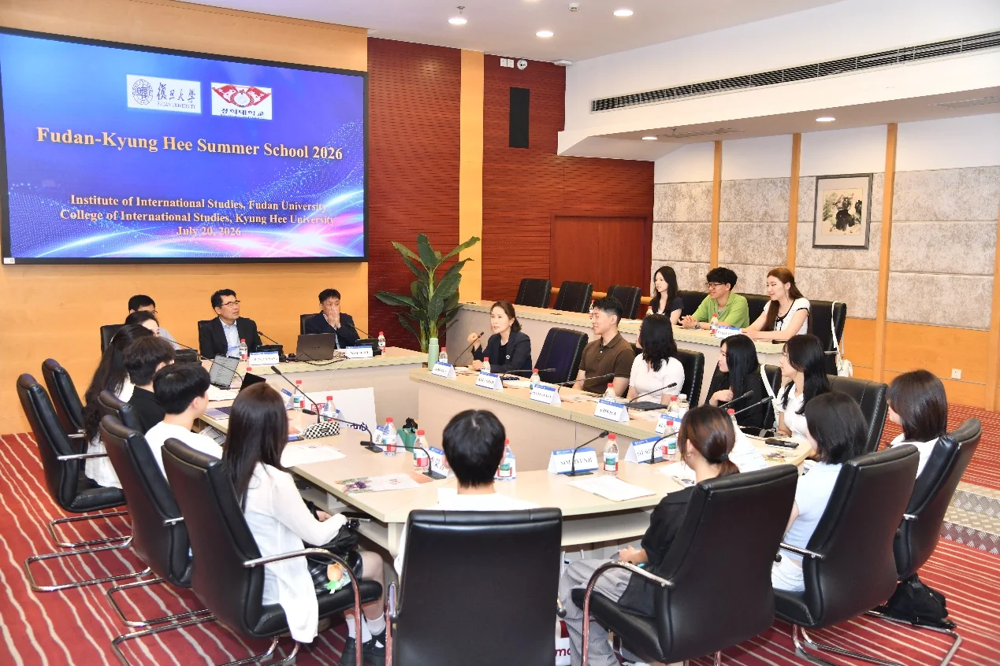

01
为特殊孩子择校：一位父亲的转会与选择
当孩子有特殊需求，家长如何在学校迷宫中找到出口？

今天看到一则新闻，讲的是某位父亲在转会时，如何为儿子选择适合的特殊学校。这背后是一个许多家庭都面临的难题：当孩子有特殊教育需求时，普通学校可能无法提供足够的支持，而特殊学校的信息又往往不透明。这位父亲的故事，其实是一个典型的教育选择困境。在中国，特殊教育学校数量有限，分布不均，且质量参差不齐。家长往往需要自己搜集信息、实地考察，甚至需要跨区申请。这个过程充满焦虑，因为选择错了，可能耽误孩子的最佳干预时间。
特殊教育在中国近年来越来越受到重视，但资源依然稀缺。根据教育部的数据，全国特殊教育学校虽然超过两千所，但大部分集中在城市，农村地区覆盖不足。同时，普通学校的随班就读政策虽然推行多年，但师资和设施往往跟不上。这位父亲的故事提醒我们，特殊需求孩子的教育选择，不仅仅是找一个学校，更是寻找一个能理解和支持孩子成长的环境。
对于普通家长来说，这个故事也有启示：教育选择从来不是简单的“好学校”与“差学校”之分，而是“适合”与“不适合”。特殊需求孩子的家长需要付出更多精力去研究政策、考察学校、沟通老师。而社会层面，则需要更多透明的信息平台和专业的指导服务。
如果你也在为特殊需求孩子择校，建议先明确孩子的具体需求（如自闭症、智力障碍、肢体残疾等），然后咨询当地残联或特殊教育指导中心，获取官方认证的学校名单。同时，加入家长互助社群，获取真实口碑。最重要的是，不要只依赖一次参观，多去几次，观察课堂互动和师生关系。
伊恩的观察
如果你也在为特殊需求孩子择校，建议先明确孩子的具体需求（如自闭症、智力障碍、肢体残疾等），然后咨询当地残联或特殊教育指导中心，获取官方认证的学校名单。同时，加入家长互助社群，获取真实口碑。最重要的是，不要只依赖一次参观，多去几次，观察课堂互动和师生关系。
02
暑期学校：跨文化学习的窗口
复旦与韩国庆熙大学合办暑期学校，为大学生提供国际交流机会。

图片来源：复旦大学Fudan University ·
查看原图复旦大学与韩国庆熙大学联合举办了2026年暑期学校。这类项目通常为期数周，包含课程、文化体验和学术研讨。对于参与者来说，这是一个低成本体验海外教育、拓展国际视野的机会。同时，华南理工大学也举办了新工科国际暑期学校。这些项目反映了高校国际化趋势，但往往名额有限、费用不低。对普通学生而言，如何获取信息并争取机会是关键。
暑期学校的价值不仅在于课程本身，更在于跨文化交流和学术网络的建立。参与这类项目的学生，往往能接触到不同国家的教授和同学，了解不同的学术传统和研究方法。这种经历对于未来的深造和职业发展都有帮助。此外，一些暑期学校还提供学分转换，可以计入本校的学业要求。
然而，暑期学校的申请竞争激烈。通常需要提交语言成绩、个人陈述和推荐信。费用方面，虽然部分项目提供奖学金，但自费部分仍然不低。对于家庭经济条件一般的学生，可以考虑线上国际课程或国内高校举办的国际暑期学校，这些项目成本更低，同样能获得国际化的学习体验。
如果你是在校大学生，可以多关注学校国际交流处的官网和公众号，提前准备语言成绩和申请材料。暑期学校通常有奖学金或补贴，不要因为费用直接放弃。即使没有出国，线上国际课程也是不错的替代方案。
伊恩的观察
如果你是在校大学生，可以多关注学校国际交流处的官网和公众号，提前准备语言成绩和申请材料。暑期学校通常有奖学金或补贴，不要因为费用直接放弃。即使没有出国，线上国际课程也是不错的替代方案。
03
上好“出征第一课” 学校举办2026年暑期“三下乡”社会实践专题培训会
华南理工大学为2026年暑期“三下乡”社会实践团队举办专题培训会，帮助学生做好实践准备，提升服务实效。
近期，华南理工大学举办本年度暑期“三下乡”社会实践专题培训会，为即将奔赴基层的学生团队上好“出征第一课”。培训会围绕安全须知、调研方法、宣传技巧和成果转化等模块展开，旨在提升学生的实践能力和服务意识。
“三下乡”是指文化、科技、卫生下乡，是高校学生暑期深入农村、社区开展志愿服务和社会调研的传统活动。本年度的活动覆盖全国多个省份，参与学生将围绕乡村振兴、教育帮扶、科技普及等主题开展实践。培训会特别强调了与当地政府和群众的沟通技巧，以及如何将专业知识转化为实际服务。
对于参与的学生来说，这次培训意味着他们能更系统地规划实践内容，避免常见误区。例如，调研方法模块教会学生如何设计问卷、进行访谈，而安全须知则涵盖了交通、饮食、防暑等实用信息。一位参与培训的学生表示：“以前觉得下乡就是去帮忙，现在知道要先了解当地需求，才能做出真正有用的成果。”
对于普通公众，尤其是农村地区的居民，这类活动可能带来直接帮助。大学生带来的新技术、新理念，以及针对当地问题的解决方案，能改善教育、医疗等条件。但也要注意，短期实践的效果有限，关键在于建立长期联系和持续跟进。
行动建议：如果你是一名即将参与“三下乡”的学生，建议提前了解服务地的实际情况，与当地负责人沟通具体需求；在实践过程中注重记录和反思，将经验转化为可复用的资料。如果你是当地居民，可以主动向学生团队提出真实需求，帮助他们更有针对性地开展工作。长期来看，高校应建立实践基地的跟踪机制，确保短期活动产生持续影响。
伊恩的观察
华南理工大学为2026年暑期“三下乡”社会实践团队举办专题培训会，帮助学生做好安全、调研、宣传等准备，提升实践效果。参与者应提前了解当地需求，注重成果转化，让短期服务产生长期价值。
04
美国科罗拉多州：公立学校可以宗教化吗？
一所自称公立的基督教学校获得官方代码，引发政教分离争议。
科罗拉多州一所名为Riverstone Academy的小学，在申请公立学校代码时隐瞒了其宗教背景。州教育部门员工发现后内部上报，但学校仍获得了代码并顺利开学。这起事件暴露了美国公立学校系统在监管上的漏洞：如何界定“公立”与“宗教”的边界？虽然美国宪法第一修正案禁止公立学校宗教化，但特许学校（charter school）等新型学校形态可能打擦边球。这对家长来说是个警示：选择学校时，不能只看“公立”标签，还要了解其运营方和课程内容。
在美国，公立学校必须遵循政教分离原则，不能进行宗教教学或活动。但特许学校作为一种公立学校，由私人运营，有时会模糊这一界限。Riverstone Academy的案例显示，学校在申请时声称提供传统学术和贸易选修课，但实际运营中却使用基督教课程。州教育部门虽然内部有人提出质疑，但并未采取有效措施阻止。这反映出监管机制的滞后和不足。
对于家长而言，这个事件提醒我们：在选择学校时，要仔细阅读学校的章程、课程大纲和教师背景。公立学校不应有宗教课程或活动。如果发现异常，可以向州教育部门或公民自由组织投诉。教育选择权很重要，但前提是信息透明。
如果你在美国为孩子选校，务必查看学校的章程、课程大纲和教师背景。公立学校不应有宗教课程或活动。如果发现异常，可以向州教育部门或公民自由组织投诉。教育选择权很重要，但前提是信息透明。
伊恩的观察
如果你在美国为孩子选校，务必查看学校的章程、课程大纲和教师背景。公立学校不应有宗教课程或活动。如果发现异常，可以向州教育部门或公民自由组织投诉。教育选择权很重要，但前提是信息透明。
05
新罕布什尔州：学校评估改革，不止看分数
新罕布什尔州教育界提议用更全面的指标评估学校，而不仅仅是考试成绩。
新罕布什尔州在全美学校排名中位列前五，但教育工作者并不满足。他们提出了一套新的学校评估体系，除了传统的学业成绩，还纳入毕业率、AP课程参与度、出勤率等指标。这反映了教育评估从“唯分数论”向多元化的转变。在中国，类似的改革也在进行，例如“综合素质评价”纳入中考和高考。但如何确保这些指标公平、可操作，仍是挑战。
新罕布什尔州的提案旨在更全面地反映学校的教育质量。传统的评估方式过于依赖标准化考试成绩，容易导致学校“应试化”，忽视学生的综合发展。新的评估体系试图平衡学业成绩与非学业成果，比如批判性思维、团队合作、社区参与等。这种改革方向与美国其他州的尝试一致，也与中国正在推进的“综合素质评价”有相似之处。
然而，多元评估也面临挑战：如何量化非学业成果？如何避免新的指标被“应试化”？如何确保不同学校之间的公平比较？这些问题没有简单答案。新罕布什尔州的提案仍在讨论阶段，但它的方向值得关注。
对于家长和学生，不要只盯着考试分数。关注学校的课程丰富度、课外活动、师生比和校园文化。评估一所学校的好坏，需要多维度的信息。同时，培养自己的综合能力，比如团队合作、批判性思维，这些在长期发展中比分数更重要。
伊恩的观察
对于家长和学生，不要只盯着考试分数。关注学校的课程丰富度、课外活动、师生比和校园文化。评估一所学校的好坏，需要多维度的信息。同时，培养自己的综合能力，比如团队合作、批判性思维，这些在长期发展中比分数更重要。
无障碍文字记录
伊恩 你好，欢迎收听伊恩每日·教育。今天是2026年7月29日。今天的故事从一位父亲的选择开始——他为了给儿子找一所合适的特殊学校，甚至把转会条件都考虑了进去。特殊教育的选择，从来不只是学校的事，它关系到一个家庭的整个生活轨迹。
伊恩 今天看到一条新闻，讲一位父亲在转会时，如何为有特殊需求的儿子选择学校。他需要在新城市找到一所既能提供专业支持、又匹配孩子个别化教育计划的学校，同时还要考虑地理位置和费用。这虽然是个案，但背后是许多特殊儿童家庭共同的困境：资源分布不均，信息不对称，每一步都像在黑暗中摸索。
先说事实。根据新浪网的报道，这位父亲在职业转换期间，主动调研了目标城市的特殊教育资源。他不仅关注学校是否有特教资质，还考察了师生比、康复课程设置，以及学校是否愿意与家长共同制定个别化教育计划。最终，他选择了一所融合教育做得较好的学校，并成功为孩子争取到了辅助技术支持和每周两次的言语治疗。
这个案例揭示了一个机制：特殊教育的选择权，很大程度上取决于家长的信息获取能力和议价能力。在中国，特殊教育学校数量有限，且多集中在发达城市。根据教育部2025年数据，全国特殊教育学校仅2300余所，而随班就读的残疾学生占比超过60%。这意味着，大多数特殊儿童是在普通学校接受教育，但普通学校的特教资源往往不足。家长需要自行评估学校是否具备“资源教室”、是否有特教教师、是否愿意调整课程。
代价是巨大的。家长可能因为找不到合适学校而放弃职业机会，或者为了孩子教育举家搬迁。经济压力也不小——私立特教机构月费动辄上万，而公立学校的支持有时流于形式。更隐蔽的代价是心理负担：家长需要在“让孩子融入普通环境”和“提供专门支持”之间反复权衡，稍有不慎就可能错过最佳干预窗口。
对普通人来说，这件事的启示有三层。第一，如果你是特殊儿童家长，不要独自硬扛。可以加入家长互助组织，比如“融爱融乐”或地方残联的家长群，共享学校评估信息。第二，在考察学校时，带上具体问题清单：学校是否有专职特教老师？是否提供个别化教育计划？是否有无障碍设施？第三，善用法律工具。根据《残疾人教育条例》，普通学校不得拒绝接收残疾学生，且必须提供合理便利。如果学校推诿，可以向当地教育局投诉。
从长期看，这个案例也折射出教育公平的深层问题。特殊教育不应只是少数家庭的“信息战”，而需要制度性的资源下沉。比如，建立区域特殊教育评估中心，让家长能一站式获取学校质量报告；或者推广“特教资源教师”制度，让每个学区都有专业人员巡回支持。
最后我想说，这位父亲的故事之所以触动我，是因为它提醒我们：教育选择从来不只是分数和排名，而是关于一个孩子能否被看见、被支持。当我们谈论教育公平时，特殊儿童的需求不应被遗忘。希望未来，每个家庭都不必在“转会”和“孩子”之间做如此艰难的选择。
感谢收听，我是伊恩，明天见。
听众 伊恩，我家孩子也有特殊需求，选学校时最应该看什么？
伊恩 首先，确认学校是否有合法的特殊教育资质，以及是否有专职的特殊教育教师和资源教室。其次，了解学校的个别化教育计划流程——他们如何评估孩子、如何制定目标、多久调整一次。第三，和在校家长聊聊，真实体验比任何宣传都重要。最后，考虑学校与家庭的距离和社区支持网络。记住，没有完美的学校，只有最适合你孩子当前阶段的学校。
伊恩 新浪财经报道，一名男生中考考了699分，却偷偷把志愿改成了中职学校。这个新闻引发了很多讨论。699分在不少地方可以上重点高中，但他选择了职业教育。这让我想到几个问题：第一，这个选择是孩子自己的意愿，还是被家庭或社会压力推动？第二，我们的社会对职业教育的偏见是否正在改变？第三，中职学校的培养质量和升学路径是否足够透明？
听众 伊恩，孩子想读中职，但我怕没前途，怎么办？
伊恩 理解你的担心。但先别急着否定。第一，查一下当地中职学校的升学率——很多中职现在有对口单招、五年一贯制，甚至能考本科。第二，看看专业的就业前景和校企合作情况。第三，和孩子一起参观学校，了解实训设备。职业教育不是死胡同，关键是要选对学校和专业。如果孩子有明确的职业兴趣，中职可能比普通高中更适合他。
伊恩 复旦大学与韩国庆熙大学联合举办的“复旦-庆熙暑期学校2026”近日开幕，这是两校在2026年暑期推出的国际学术交流项目。根据复旦大学官方发布的消息，该项目旨在促进中韩学生跨文化学习，课程涵盖东亚研究、语言文化等主题。同期，华南理工大学也举办了“新工科国际暑期学校”，聚焦人工智能、智能制造等前沿领域，并于7月29日闭幕。此外，华南理工还组织了“三下乡”社会实践专题培训会，为即将奔赴乡村的学生提供指导。
这些暑期学校和实践活动，本质上是大学教育从课堂向真实世界的延伸。暑期学校通常由高校或合作机构设计短期课程，学生通过选修获得学分或证书；而“三下乡”则是中国高校的传统社会实践，学生深入农村开展支教、调研、科技服务等。两者的共同点在于：它们都试图打破校园围墙，让学生在真实情境中学习——无论是国际学术交流，还是基层服务。
但这类活动的质量参差不齐。以暑期学校为例，有些项目课程紧凑、师资雄厚，能真正拓宽视野；而另一些则可能沦为“游学团”，学术含量低，费用却高昂。对于学生而言，参与这类活动的代价主要是时间和金钱。一个为期两周的暑期学校，学费加食宿可能数千元，如果只是走马观花，性价比并不高。而“三下乡”虽然通常由学校资助，但学生投入的精力可能被琐事消耗，若缺乏有效指导，实践效果也会打折扣。
对普通大学生来说，关键在于主动筛选而非被动参与。在报名前，你可以做三件事：第一，查清项目主办方的学术声誉和往届评价，比如复旦-庆熙项目是否有明确的课程大纲和考核标准；第二，评估自己的目标——是为了提升专业能力、积累国际经验，还是单纯体验生活？第三，计算投入产出比，包括时间、费用以及可能获得的学分或证书价值。对于“三下乡”，同样需要明确服务方向：是希望了解乡村教育现状，还是锻炼团队协作能力？带着问题去，才能让经历真正转化为成长。
从长期来看，这类活动对教育公平的影响值得关注。家境优越的学生更容易负担昂贵的国际暑期项目，而“三下乡”等低成本实践则相对普惠。大学应当提供多元化的拓展机会，并确保信息透明，避免让“经历”成为新的阶层标签。作为学生，你也可以通过申请奖学金、选择校内资助项目等方式，降低参与门槛。
总之，暑期学校和“三下乡”都是宝贵的学习机会，但它们的价值取决于你的主动选择。别让“参加”本身成为目的，而要让每一次走出课堂，都成为有意识的成长。
伊恩 华南理工大学在2026年7月29日发布了新闻，学校举办了暑期“三下乡”社会实践专题培训会，主题是上好“出征第一课”。这所高校每年都会组织学生利用暑假深入农村，开展文化、科技、卫生方面的志愿服务。培训会的目的，是帮助学生提前了解实践的意义、方法和安全事项，避免到了当地手足无措。
“三下乡”听起来像是一个传统活动，但它的实际效果往往取决于学生的投入程度和当地需求是否匹配。很多同学报名时满腔热情，到了现场却发现：要么自己准备的内容和村民需要的不对口，要么因为缺乏沟通技巧，活动流于形式。比如，有的团队去教英语，但当地孩子更缺的是基础阅读辅导；有的团队去搞卫生宣传，但村民更关心的是如何获得医疗资源。这种错位，既浪费了学生的精力，也可能让当地人对这类活动产生疲劳感。
从机制上看，“三下乡”的核心是“双向受益”：学生获得社会经验，当地获得实际帮助。但现实中，由于前期调研不足、学校考核偏重数量而非质量，一些团队变成了“打卡式”实践——拍几张照片、写一篇总结，就算完成任务。这对学生成长和当地发展都没有实质帮助。
对普通学生来说，参与“三下乡”是一次难得的成长机会，但前提是做好功课。我的建议是：第一，提前联系服务地的村干部或学校老师，了解他们最迫切的需求是什么，而不是自己想当然；第二，带着具体问题去，比如“我想了解农村电商的痛点”，这样观察和记录才有方向；第三，实践结束后一定要做反思和复盘，把所见所闻转化为自己的认知，而不是交一份流水账报告。
长期来看，这类社会实践的价值在于培养人的同理心和解决问题的能力。如果只是走马观花，那和旅游没什么区别。真正投入的学生，往往会在几年后回忆时，说那是大学里最有意义的一段经历。所以，如果你正准备出发，不妨先问自己：我能为那里带来什么？我又能从那里带走什么？
伊恩 今天想和你聊一个来自美国科罗拉多州的案例，它触及了教育公平中一个非常根本的问题：当一所学校声称自己是公立学校，但实际由宗教团体运营时，谁来把关？
根据Chalkbeat和The 74的报道，去年夏天，一所名为Riverstone Academy的新小学向科罗拉多州教育部门申请公立学校代码。在申请中，他们只提到将提供传统学术和职业选修课，完全没有提及学校的宗教背景。但很快，教育部门内部就有员工发现，这所只有30名学生的学校实际上由一个基督教团体运营，并且使用部分基督教课程。
多名员工在内部提出了质疑，并将问题上报给了州法律顾问。然而，Riverstone Academy最终还是拿到了公立学校代码。州教育部门没有立即制止，直到几个月后，该团体的负责人公开宣布学校是“公立基督教学校”，事情才被曝光。
这起事件的核心争议在于：美国的公立学校必须遵守政教分离原则，不能有宗教背景。但特许学校体系存在灰色地带——特许学校虽然接受公共资金，但可以由非营利组织或团体运营，监管相对宽松。Riverstone Academy正是利用了这一点，在申请时隐瞒了宗教性质。
那么，这起事件对普通人意味着什么？首先，它暴露了监管漏洞：教育部门明知学校有宗教背景，却没有明确的程序来阻止其进入公立教育系统。其次，它可能影响学生和家长的权益：如果一所“公立学校”实际上在传授宗教内容，那么非宗教家庭的孩子可能会面临课程与家庭价值观冲突的问题。
对中国家长来说，这个案例同样有警示意义。无论在哪里，学校的教育理念和实际运作是否一致，都需要仔细甄别。比如，有些学校宣传“素质教育”，但实际仍以应试为主；有些声称“国际化”，但课程体系并不规范。建议你在选择学校时，不仅要看宣传材料，还要通过开放日、与在校家长交流、查阅官方评估报告等方式，核实学校的真实运作。
从更宏观的视角看，这个案例也提醒我们：教育公平不仅仅是资源分配的问题，还包括对教育本质的坚守。当宗教、商业或其他利益试图渗透公共教育时，必须有清晰的规则和有力的执行来保护每一个孩子的权利。
希望今天的分享能让你对教育选择多一份警觉。我们明天见。
伊恩 新罕布什尔州的学校在全美排名前五，但教育者们却提出要改变评估方式。这听起来有点反直觉——既然已经做得很好，为什么还要改？
事实是：7月29日，州长凯利·阿约特引用WalletHub的研究，宣布新罕布什尔州学校综合排名全美前五。该研究综合了学业 proficiency 分数、毕业率、AP课程参与率、出勤率等指标。但同一天，教育工作者们发布了一份新提案，主张用更全面的体系取代现行评估。
现行评估依赖标准化考试和量化指标，这容易导致学校“为考而教”，忽视学生社会情感能力、创造力、批判性思维等软技能。新提案的核心是：评估应关注学生成长轨迹、学校氛围、社区参与度，以及学校是否帮助每个学生发挥潜能，而非仅仅比较平均分。
为什么排名高的州还要改？因为排名本身有局限。WalletHub的指标偏向学术和升学，但无法反映学校是否包容、是否提供心理健康支持、是否培养公民责任感。新罕布什尔州虽然整体表现好，但内部存在差距：农村学校资源不足，部分学生家庭经济困难。单一排名掩盖了这些结构性问题。
新评估体系的具体做法包括：引入学生成长模型（衡量进步而非绝对水平）、收集学生和家长的满意度调查、考察学校与社区的合作项目。这需要更多数据采集和主观判断，成本更高，也可能引发“评估标准不统一”的争议。但支持者认为，只有多元评估才能引导学校真正关注每个孩子的全面发展。
对你我而言，这个案例的启发是：选择学校时，不要只看分数和排名。可以问学校：你们如何评估学生的进步？除了考试，还有哪些方式了解学生？学校氛围如何？家长和社区如何参与？一个健康的评估体系，应该像一面多棱镜，折射出教育的丰富光谱。
长期看，新罕布什尔州的尝试如果成功，可能推动全美评估改革。但公平问题依然存在：资源充足的学校更容易在多元评估中表现优异，而薄弱学校可能面临更多挑战。教育改革从来不是一蹴而就，但至少，有人开始思考“什么才是真正的好学校”。
伊恩 今天的故事看似分散，但有一条主线：教育选择中的信息不对称和决策焦虑。无论是特殊学校、中职、暑期项目，还是宗教学校争议和评估改革，核心都是如何获取真实信息、如何做出适合孩子的选择。作为家长或学生，我们需要建立自己的信息筛选框架：看资质、看过程、看结果、看口碑。同时，保持开放心态，不盲从主流，不恐惧差异。
听众 伊恩，你怎么看中职和普高的选择？
伊恩 没有绝对的好与坏。普高通向学术型大学，中职通向技术型职业或应用型本科。关键是孩子的兴趣和能力。如果孩子动手能力强、对某个职业有热情，中职可能比普高更有优势。而且现在职业教育的升学通道越来越宽。建议你花时间了解本地的中职学校，看看他们的毕业生去向，再结合孩子的想法做决定。
伊恩 今天的节目就到这里。教育不是一条单行道，每个孩子都有自己的节奏。希望今天的分享能帮你少一些焦虑，多一些思路。如果你有教育方面的困惑，欢迎留言。我是伊恩，我们明天见。